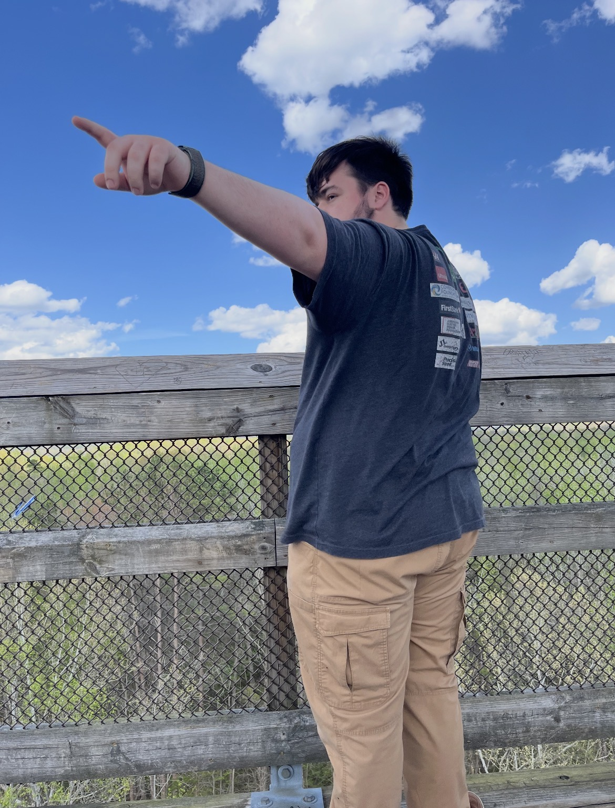
Robots!🤖
I have been involved with FIRST Robotics from Elementary School until now! I am a proud alumnus of Team 3939 Botetourt 4-H Robotics, where our small team of 8 competed against all of Virginia, DC, and Maryland. I've been serving as a mentor for the team for the past 3 years, teaching the current high school students the fundamentals of how to design and code a robot. I even gave a talk for the Rural Robotics Coding Bootcamp on how to program a drivetrain!
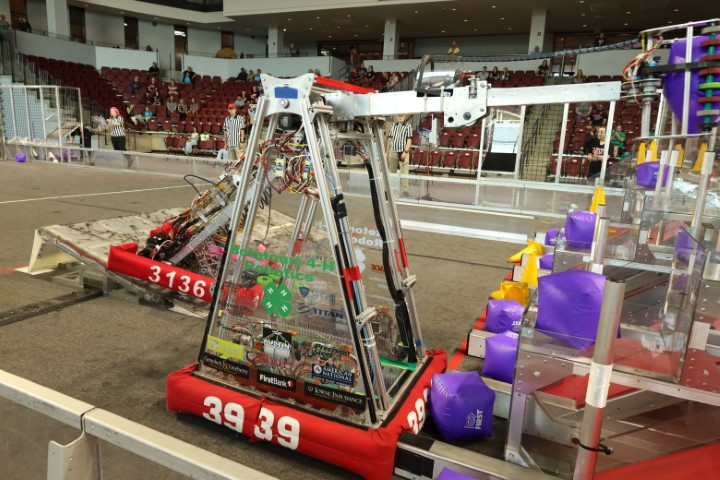
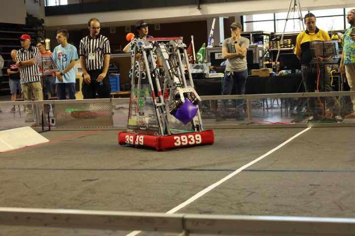
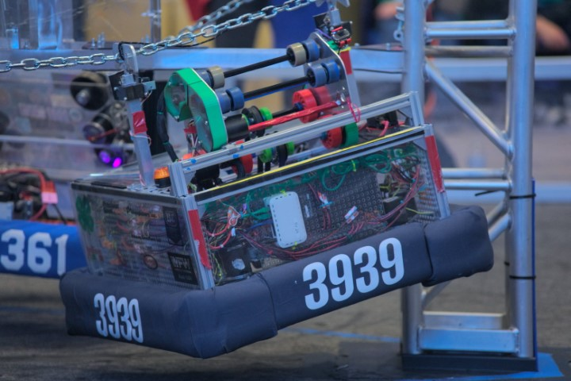
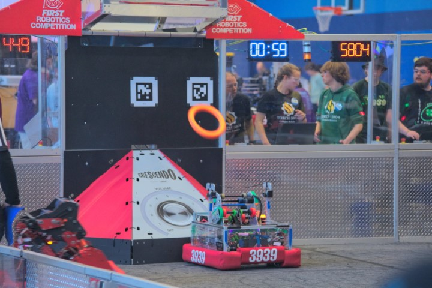
3939's 2023 and 2024 robots, Frosty and Cookout.
Music!🎶
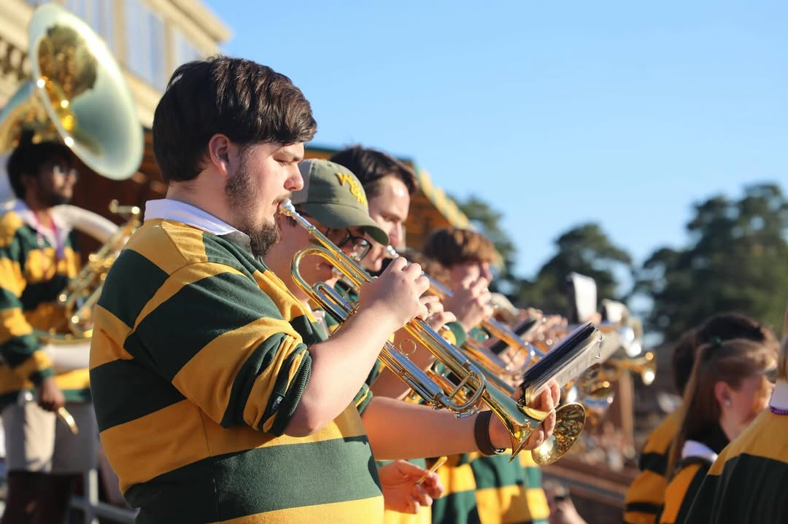
When I need a break from doing Computer Sciencey things, I like to play and listen to music! Currently, I play trumpet for the William and Mary Pep Band, where we get to wear some awesome uniforms that makes us look like radioactive bees. I've also recently taken up banjo with the Appalachian Music Ensemble at William & Mary. When I just feel like listening to music, I listen to a bunch of different genres, mainly indie, alt-rock, and hip-hop.
Digital Art!🖌️
I've also dabbled a bit in digital art through some of the activities and classes I've taken, where I've had the opporutinity to create a whole host of digital projects in GIMP, Photoshop, Premier, Illustrator, Blender, and Cinema4D. I've created designs for 6 shirts worn by over 250 people, a plethora of 3D models and animations, stickers, and a buttload of promotional materials. In particular, I'm trying to get better at creating vector art with Illustrator and you can see a collection of all my work on my projects page!
Southwest Virginia!⛰️
I'm a big fan of Virginia in general, but I particularly love its Appalchain Mountains, which are objectively the best part of the state. I grew up in the Blue Ridge, and I love the people and nature of the area. During my time off, I like taking hikes in the Blue Ridge Mountains and visiting the towns and cities in the area. I can also name all 133 counties and cities of Virginia! See below.
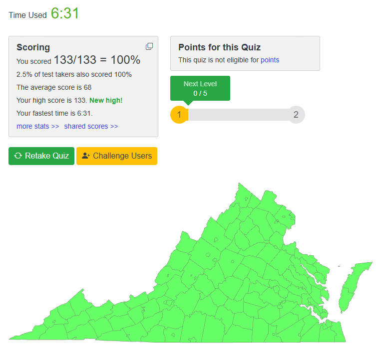
A good use of my time.
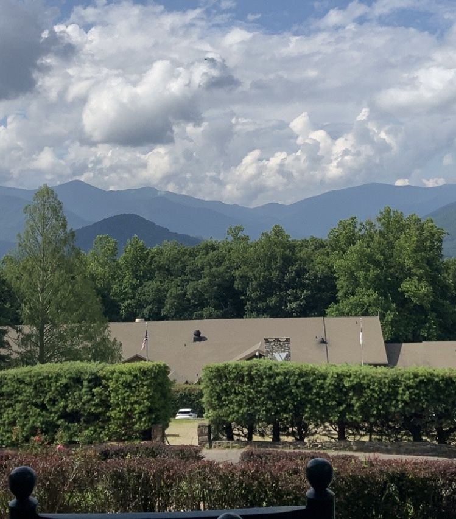
The Blue Ridge Mountains.
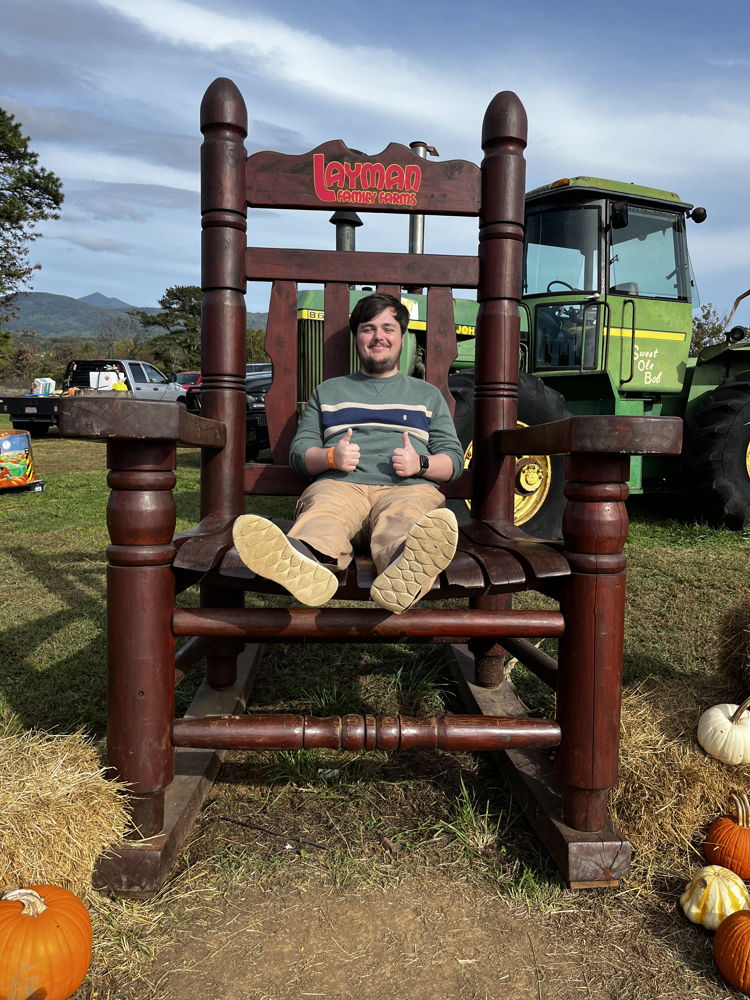
Everything's bigger in
Southwest Virginia.
Computers!🖥️
I love building computers! My current build is has an RTX 3070 Ti, Ryzen 5 5600G, 16 GB Corsair Vengence DDR4-3200, and a 1 TB Samsung 990 EVO Plus.
On top of that, I have a home server! Run off a retired Optiplex, its used as a file server, media server with Jellyfin, and ROM server with RomM. It's also being used to host this website! When I get some more equipment in the future, I'd like to turn it into a proper homelab where I can simulate firewalls, Windows AD, and other software to learn network security and penetration testing.
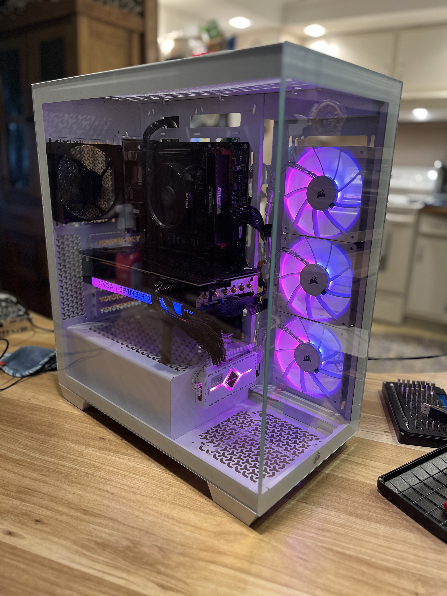
Cats!🐈⬛
I have two black cats named Lily and Ninja. They're better than your cats.
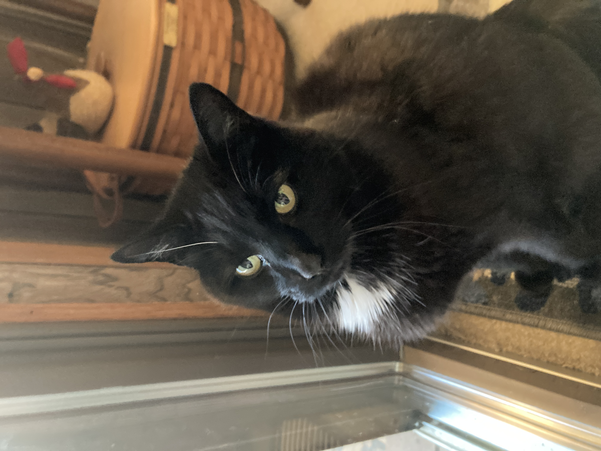
Lily.
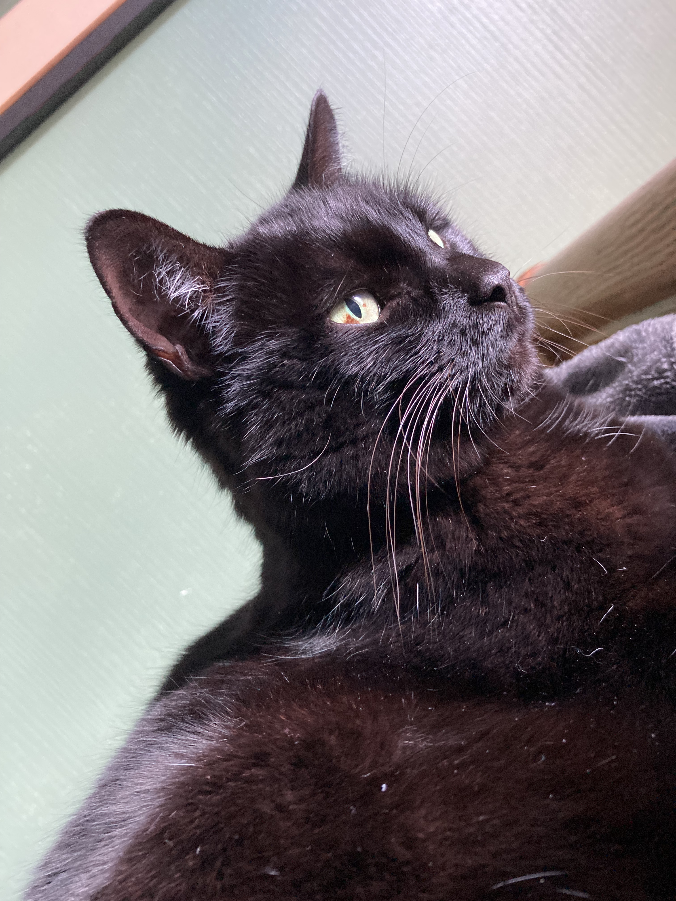
Ninja.
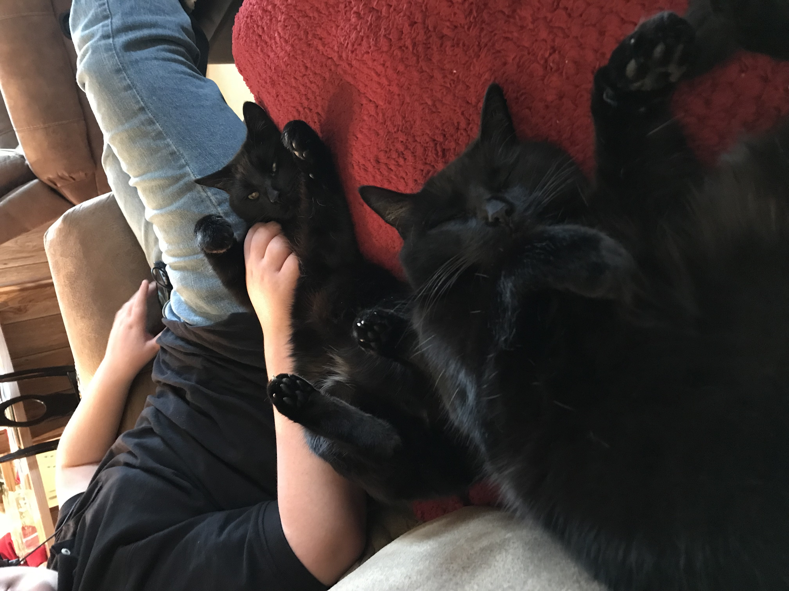
Lily and Ninja.